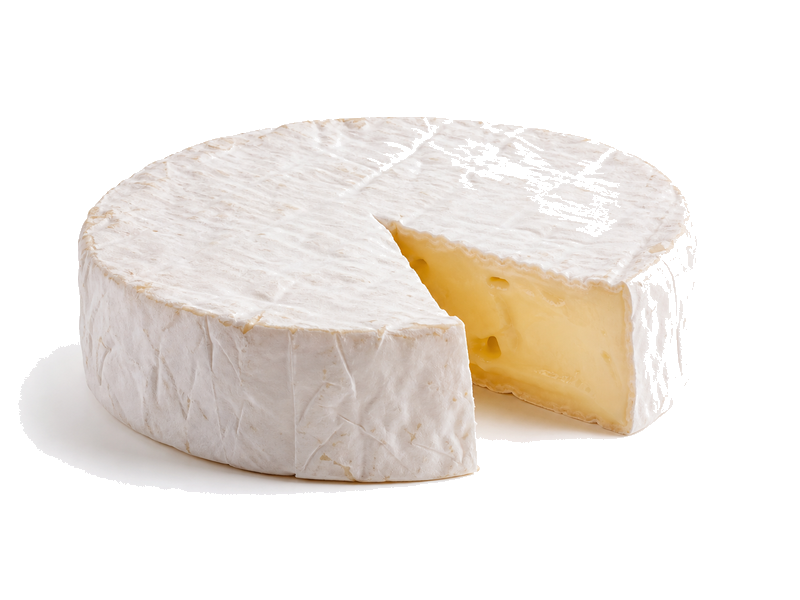

Nabiał i jaja
Ser Brie
Ser Brie: 21 g białka, 334 kcal, 0.5 g węglowodanów i 28 g tłuszczu na 100 g. Kategoria: Nabiał i jaja.
Kalorie334 kcalna 100 g
Białko / proteiny21 g
Węglowodany0.5 g
Tłuszcz28 g
Cena (szac.)~4,83 złza 100 g
Ceny zaktualizowano: maj 2026 (szacunek — ceny w popularnych supermarketach)
Porcja: porcja (30g)
| Kalorie | 100 kcal |
|---|---|
| Białko | 6.3 g |
| Węglowodany | 0.1 g |
| Tłuszcz | 8.4 g |
| Cena (szac.) | ~1,45 zł |
Szczegółowe składniki odżywcze na 100 g
| Wartość energetyczna (kalorie) | 334 kcal |
|---|---|
| Białko (proteiny) | 21 g |
| Węglowodany | 0.5 g |
| Tłuszcz | 28 g |
| Tłuszcze nasycone | 18 g |
| Tłuszcze nienasycone | 10 g |
| Witaminy i minerały | Wapń, Witamina B2, Fosfor |
| Współczynnik kcal / 1 g białka | 15.9 |
| Cena produktu (szac. za 100 g) | ~4,83 zł |
| Cena za 100 g białka (szac.) | ~23,02 zł |